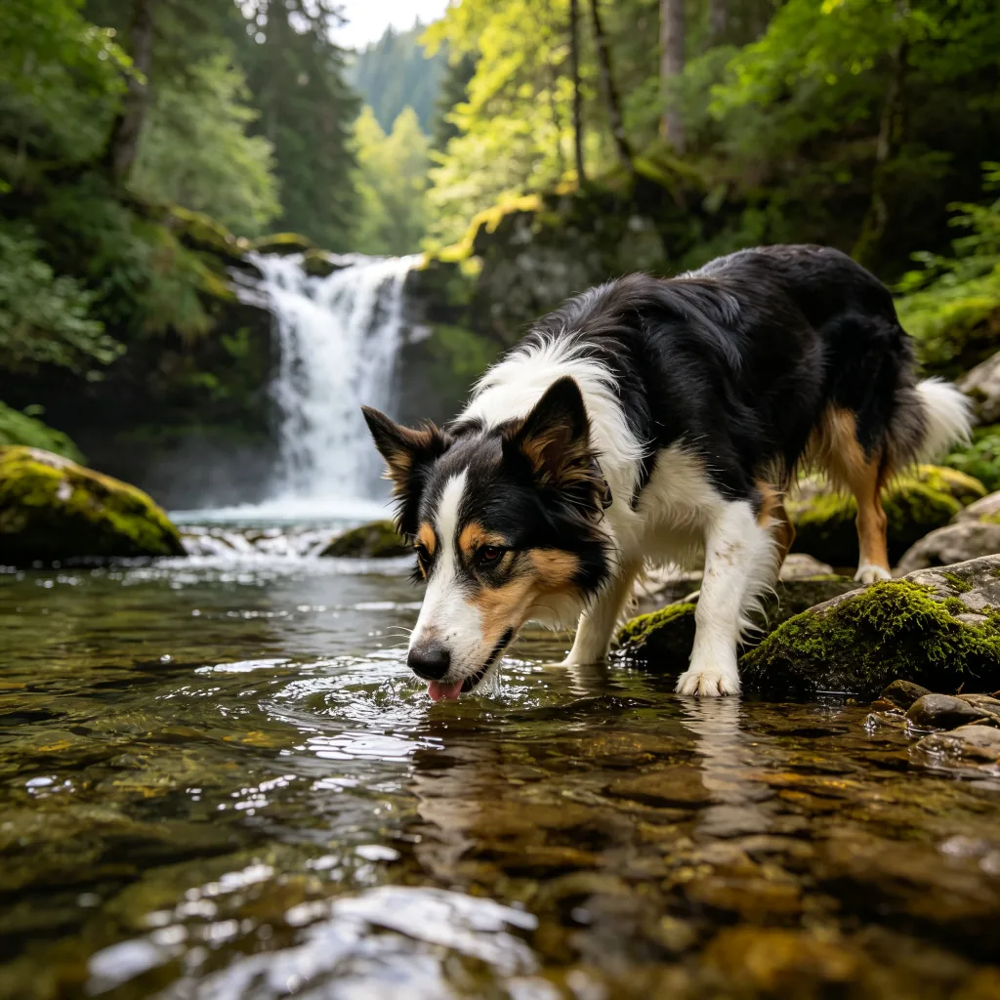

深秋的公園，楓樹的葉子被秋霜染成了深紅和金黃。一隻英國短毛貓坐在落葉堆中，一身藍灰色的毛髮在暖色調的背景中顯得格外優雅。牠抬頭望著樹上飄落的楓葉，一隻爪子輕輕抬起，似乎想要抓住一片飛過的葉子。這個畫面，或許就是秋天最寧靜的瞬間。但你有沒有想過，貓咪是如何感知季節變化的？秋天的到來對貓咪有什麼影響？
貓咪如何感知季節？
雖然貓咪不像人類一樣有日曆，但牠們可以透過多種感官來感知季節的變化：
日照時間：和很多動物一樣，貓咪的體內有一個「生物鐘」（晝夜節律和季節節律），可以感知白天長度的變化。隨著秋天來臨、白天變短，貓咪的大腦會分泌更多的褪黑激素，這會影響貓咪的食慾、睡眠和行為。研究顯示，日照時間的變化是影響貓咪季節性行為（如發情、換毛）的最主要因素。

溫度變化：貓咪對溫度非常敏感。貓咪的正常體溫是38-39°C，比人類高，而且貓咪的舒適溫度區間大約是30-38°C，也比人類高。因此，當秋天氣溫下降時，貓咪會明顯感覺到寒冷，從而改變行為——更喜歡曬太陽、窩在溫暖的地方、和主人擠在一起睡覺。
氣味變化：秋天的空氣中有著獨特的氣味——落葉、泥土、果實、冷空氣。對嗅覺靈敏的貓咪來說，這些氣味的變化是季節來臨的明確信號。貓咪可能會因為氣味的變化而變得更加活躍或更加焦慮，這取決於個體的性格和經歷。
聲音變化：秋天的聲音也與夏天不同——風吹落葉的聲音、昆蟲叫聲的減少、鳥類遷徙的叫聲。貓咪的聽覺非常靈敏，可以感知到這些細微的聲音變化。
秋天對貓咪的影響
隨著秋天的到來，貓咪的身體和行為會發生一些變化：
- 換毛：秋天是貓咪的換毛季節——夏天的薄毛會脫落，長出更厚、更密的冬季毛髮，以應對寒冷的天氣。在換毛季節，貓咪的掉毛量會明顯增加，需要更頻繁地梳毛，以去除死毛，預防毛球症。
- 食慾增加：隨著氣溫下降，貓咪需要更多的能量來維持體溫，因此食慾可能會增加。這是正常的生理現象，但要注意不要讓貓咪過度進食導致肥胖。可以適當增加食物量，但要監控貓咪的體重變化。
- 睡眠增加：秋天的白天變短、氣溫變涼，貓咪可能會變得更愛睡覺。這是正常的季節性變化，不需要過度擔心。但如果貓咪的精神狀態明顯異常（如極度嗜睡、食慾廢絕），應該及時就醫。
- 活動量變化：有些貓咪在秋天會變得更加活躍（因為涼爽的天氣更適合活動），而有些貓咪則會變得比較懶散（因為想要保存能量）。這取決於貓咪的品種、年齡、性格和健康狀況。
秋季貓咪護理要點
在秋天，貓咪的護理需要注意以下幾點：
加強梳毛：換毛季節要每天梳毛，尤其是長毛貓。梳毛可以去除死毛，減少貓咪舔入肚子的毛量，預防毛球症。同時，梳毛也可以促進血液循環，讓新長出來的毛髮更加健康有光澤。
注意保暖：雖然貓咪有毛髮保護，但在寒冷的天氣裡仍然需要注意保暖。可以為貓咪提供溫暖的窩（如加熱墊、絨毛窩），讓貓咪在寒冷的夜晚有一個溫暖的休息處。但要注意加熱墊的溫度不要過高，以免燙傷貓咪。
預防呼吸道疾病：秋天氣溫變化大，貓咪容易感冒或患上呼吸道疾病。要注意室內溫度的穩定，避免貓咪長時間待在冷風直吹的地方。如果貓咪出現打噴嚏、流鼻水、咳嗽等症狀，應該及時就醫。
定時驅蟲：雖然秋天的寄生蟲比夏天少，但仍然需要定期驅蟲。尤其是如果貓咪會外出，或者家裡有其他寵物，更要注意驅蟲。
貓咪的「季節性情緒低落」？
人類會有「季節性情緒失調」（SAD），在冬天容易感到抑鬱和疲憊。那麼貓咪會不會有類似的情況呢？目前還沒有確鑿的科學證據表明貓咪會有SAD，但有些貓咪在冬天確實會表現出活動量減少、睡眠增加、食慾變化等症狀。這可能與日照時間減少、氣溫降低有關。如果你的貓咪在秋冬季節表現出明顯的情緒低落，可以嘗試增加室內光照、多和貓咪互動玩耍、提供豐富的環境刺激，來幫助貓咪度過季節變化。
秋楓中的英短，用牠的寧靜和優雅，見證著季節的變換。秋天是一個美麗的季節，也是貓咪身體和行為發生變化的季節。作為貓奴，我們應該了解這些變化，給予貓咪合適的護理和關愛，讓貓咪在每一個季節都能健康、快樂地生活。或許，和貓咪一起度過的每一個季節，都是生命中最美好的時光。